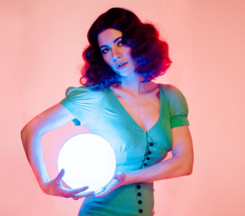

Bienvenue sur notre site web ! Nous vous annonçons la sortie de ce nouvel album légendaire : Electra Heart, de l'artiste Marina. Suivez l'histoire de ce personnage principal à travers notre top 5 des chansons de l'album.
Electra Heart nous raconte son hsitoire sous forme de tragédie éléctro pop. Passant de l'adolescence à l'âge adulte, elle essaye de surmonter ses troubles psychologiques : dépression et anxiété. Elle décrit son parcours à travers des thèmes tels que l'adolescence, le rôle du genre, ou la sexualité. Afin de se construire, elle incarne 4 archétypes qu'elle désigne par "Housewife", "Homewrecker", "Idle Teen" et "Beauty Queen".
Marina Lambrini Diamandis est une chanteuse galloise d'origine grecque. A 35 ans, elle a déjà sorti 4 albums . Elle fait principalement de l'indie pop et a la particularité de changer entièrement d'univers graphique à chaque album.
1. Bubblegum Bitch
Bubblegum Bitch, première chanson de l'album, ouvre le bal et nous fait prendre connaissance de l'ambiance générale et du personnage d'Electra Heart. Adolescente superficielle, confiante et égocentrique, elle semble insouciante et heureuse.
2. Primadonna
Nous apprenons à présent dans Primadonna qu'Electra Heart ne trouve que le bonheur que dans le matérialisme et le luxe. Elle explique aussi souhaiter épouser un homme riche car selon elle, il s'agit de sa seule source de bonheur.
3. Teen Idle
Teen Idle est l'expression du mal être d'Electra dans sa peau d'adolescente souffrant de dépression. Elle évoque des sujets tels que ses troubles du comportement alimentaire, son anxiété et son désir d'être une femme parfaite, adorée et admirée par tous.
4. Lies
Lies est une chanson d'amour triste dans lequel il est question de mensonge, mais surtout de désillusion. Car peut importe les efforts fournis, Electra ne sera jamais parfaite et malgré le superficiel, subira toujours les sentiments douloureux d'une rupture.
5. State of Dreaming
Dans cette chanson, qui pourrait clôturer l'histoire, Electra se rend compte que vivre dans l'apparence, faire semblant et ne trouver son bonheur que dans le futil n'apporte rien. Sa vie n'est que mensonge, comme si elle était comédienne dans une pièce de théâtre. Le réveil, bien que brutal, annonce une suite prometteuse pour le personnage s'etant finalement remis en question.
Commentaire de l'artiste
“Electra Heart is the antithesis of everything that I stand for. And the point of introducing her and building a whole concept around her is that she stands for the corrupt side of American Ideology, and basically that’s the corruption of yourself. My worst fear -that’s anyone’s worst fear- is losing myself and becoming a vacuous person. And that happens a lot when your very ambitious.”